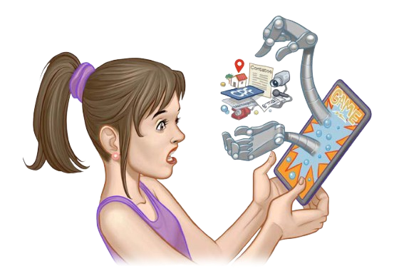

O excesso de exposição online pode comprometer sua privacidade e dar a golpistas a oportunidade de usar seus dados para, por exemplo, tentar se passar por você.
>>> depois que algo é postado, dificilmente pode ser excluído
>>> quanto maior sua rede de contatos, mais pessoas terão acesso a seus dados
Os sites que você acessa podem coletar dados de seu navegador, usá-los para traçar seu perfil comportamental (profiling) e, com base nele, oferecer conteúdos personalizados para influenciá-lo ou limitar suas opções.
>>> aceite somente cookies necessários
>>> configure o navegador para não aceitar cookies de terceiros
use navegação anônima, se possível
Para funcionar, muitos aplicativos solicitam acesso a seus dados, além de acesso à câmera, microfone, geolocalização, redes e contatos. Alguns acessos são essenciais, mas outros podem ser abusivos.
Ataques de phishing procuram induzi-lo a fornecer seus dados. É comum que atacantes utilizem técnicas como o envio de e-mails e mensagens eletrônicas falsas para coletar dados.
>>> antes de clicar, analise o contexto e os detalhes e, na dúvida, não clique!
>>> desconfie até de mensagens enviadas por “conhecidos"
>>> cheque o arquivo com antivírus antes de abri-lo e, na dúvida, não abra!
>>> use sempre conexão segura (https)
Para ter acesso a seus dados, golpistas podem criar perfis falsos em redes sociais, tentando se passar por pessoas ou empresas conhecidas.
>>> busque pelo selo indicativo de conta verificada
>>> busque o perfil oficial da pessoa ou empresa
Reforçar a autenticação ajuda a proteger suas contas e dispositivos contra invasões e a minimizar o impacto do vazamento de senhas. Atacantes se aproveitam de dados obtidos via vazamentos ou malware para tentar invadir contas e dispositivos e, então, coletar mais dados ou usá-los para aplicar golpes.
Dados podem ser indevidamente acessados se transmitidos sem criptografia. A criptografia cifra os dados para que, mesmo que um ata- cante os capture, não seja possível entender.
>>> além de cifrar os dados, garantem que você está conectando no destino correto
>>> usem conexões seguras (https)
>>> ofereçam verificação em duas etapas
Seus dispositivos têm grande quantidade de dados sobre você, por isso são visados por ladrões e atacantes, que tentam invadi-los explorando vulnerabilidades ou infectá-los usando malware.
>>> ative a atualização automática, sempre que possível
Seus dados podem ser perdidos a qualquer momento, seja por acidente, furto, falha de sistema, atualização malsucedida ou defeito físico em seu dispositivo. Ter cópias permite recuperá-los, reduzindo os transtornos.
>>> serviço de nuvem
>>> sincronização com outro equipamento
>>> disco externo ou pen drive
Muitas informações sensíveis, que você pode preferir manter privadas, são hoje arquivos digitais, por exemplo documentos, fotos ou informações de saúde. Guardá-las criptografadas protege contra acesso indevido por atacantes ou malware.
>>> alternativamente, crie uma partição criptografada
Mídias portáteis, como pen drives e discos externos, podem ser perdidas ou furtadas e, se desprotegidas, ter os dados acessados indevidamente. Além disso, os dados gravados podem ser apagados ou criptografados por malware, impedindo que sejam acessados.
>>> conecte-as apenas quando for realmente usá-las
Dados armazenados em seus dispositivos e mídias podem ser indevidamente acessados, por isso é importante garantir que sejam apagados antes de você descartá-los ou repassá-los a terceiros.
Já pensou por que tantas empresas pedem para você fazer cadastro e informar o CPF a cada compra? O desconto é a contrapartida para que você autorize a coleta e o uso de seus dados. Assim, elas passam a conhecê-lo melhor e podem selecionar o que ofertar ou deixar de ofertar a você.
>>> para que seus dados serão usados e com quem serão compartilhados?
>>> os valores dos descontos compensam sua exposição?
>>> você pode se tornar vítima de golpes
Antes de fornecer seus dados pessoais em sites e aplicati- vos, é importante saber como eles serão tratados. Isso ajuda a identificar práticas abusivas de coleta e compartilhamento de dados que possam comprometer sua privacidade e segurança.
>>> quais dados são coletados
>>> para quais finalidades serão usados
>>> com quem podem ser compartilhados e por quê
A pessoa (ou seja, o Titular dos dados) que sofre algum tipo de abuso deve utilizar os canais oficiais de atendimento disponibilizados pela organização (ou seja, Controlador) ou, pela ANPD, caso não consiga exercer seus direitos perante o Controlador. A comunicação à ANPD pode se dar por meio de uma petição de Titular, ou, ainda, por meio de denúncia, em caso de suposta infração da LGPD, quando não for aplicável a petição de Titular.
Toda pessoa tem o direito de saber como seus dados pessoais são tratados por organizações. A Lei Geral de Proteção de Dados (LGPD) não é aplicada quando os dados são utilizados de forma particular, mas somente quando os dados pessoais são usados por organizações públicas, privadas e terceiros para fins econômicos. A LGPD define termos específicos com o propósito de classificar tipos de infor- mações pessoais, instituições que tratam os dados e papéis de quem trata os dados. Conhecer esses termos ajuda a compreender as políticas de privacidade, estimar o dano e quem contatar quando tiver problemas. Conheça a seguir alguns dos termos defi- nidos na LGPD.
É a pessoa natural a quem se referem os dados pessoais.
São as informações de identifi- cação, como nome, documentos e endereço residencial, mas também informações indiretas como seus hábitos de consumo, sua aparência e aspectos de sua personalidade, que possam ser usadas para determinar o seu perfil comportamental.
São dados relacionados a origem racial ou étnica, convicção reli- giosa, opinião política, filiação a sindicato ou a organização de caráter religioso, filosófico ou político, dado referente à saúde ou à vida sexual, dado genético ou biométrico, quando vinculado a uma pessoa natural.
Dado que não permite que o Titular seja diretamente identi- ficado. É uma forma de manter a segurança e a privacidade dos dados.
É o responsável pelo tratamento dos dados do Titular. É ele quem define como os dados são tratados e o que o Operador pode fazer.
É quem trata os dados pessoais em nome do Controlador.
É o Controlador e o Operador.
É a pessoa indicada pelo agente de tratamento para atuar como canal de comunicação entre o Controlador, o Titular e a ANPD. Dentre suas funções, destaca-se a orientação dos funcionários e dos contratados da entidade a respeito das práticas a serem tomadas em relação à proteção de dados pessoais.
É a autarquia, de natureza es- pecial, vinculada ao Ministério da Justiça e Segurança Pública, que tem como missão zelar pela proteção de dados pessoais no país, incluindo normatização, fiscalização e aplicação de san- ções por violações à LGPD, que podem incluir multas de até R$ 50 milhões por infração.